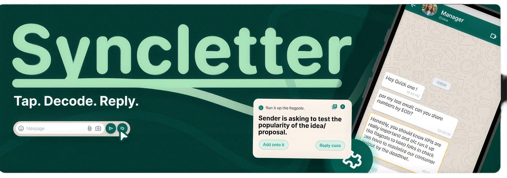
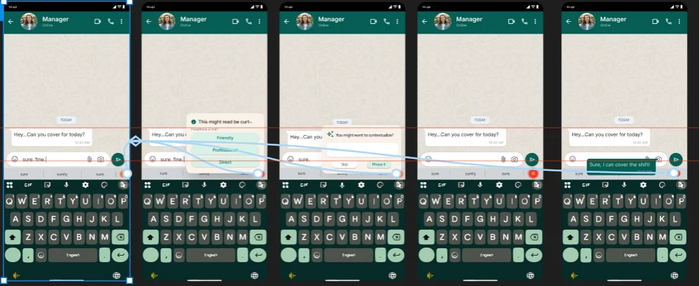

Building Syncletter
Workplace messages can be hard to interpret.
Context
Solution
Problem Statement
Research
Design
I designed Syncletter for early-career employees who may second-guess messages from people they do not know well, especially colleagues in senior or supervisory roles. The aim was to make workplace communication feel clearer and less stressful while keeping the user in control.
Through past design work and internships, I noticed workplace messages can be difficult to interpret without shared context. Jargon, brief replies, and unclear requests may leave new employees unsure what a colleague means or how urgently they need to respond. Syncletter helps make those messages easier to understand.
Syncletter decodes a confusing phrase on tap. It shows what it likely means, how urgent it is, and a few short reply pointers, built from what you've personally taught it about that sender. Everything stays on your device, and the sender never knows.
Skills
Timeline
Tools
Interaction Design
Figma, Figma Motion
Prototyping
Firebase
Research
Claude Code
August 2026

Interaction design
Personal Project
How might we help early-career employees understand ambiguous workplace messages and respond with more confidence, while respecting their privacy and keeping them in control?
The project began with a broad question about misunderstandings in digital communication. Research helped narrow the focus to a specific moment: the receiver trying to interpret a message from someone they do not yet know well.
To know more, I interviewed people who had recently joined the corporate world, and at times they had trouble keeping up with the language used.
- 6 out of 10 already reread and second-guess before sending!
- 5/10 users agree corporate tone-monitoring isn't just effortful, it's described as exhausting and constant.
- 8/10 users want to keep the choice to stay "human," even when they know a suggestion might be better.
- A full AI rewrite is trusted less than a human's own imperfect wording; this came up independently, unprompted in every 2nd interview!
I am fairly new to the Corporate world, and honestly I do not understand the overly formal mails my HR sends.
I learnt, I wasn't the only one struggling!
-Participant, Age 22, From Bangalore.
Looking at the current market; we found many tools offered full rewrite, paraphrasing and were standalone apps.
Here is where, Syncletter differs.
It is local, editable, and sits within the texting app.
Logo/Icon
Expected Experience on WhatsApp
The product is designed around a personal, user-taught glossary: meanings are saved for specific senders and can be confirmed or changed by the user.
Reply cues offer direction rather than ready-made sentences, so the user retains their voice and agency. The concept also puts privacy at the center: the sender is not notified, and the project direction specifies on-device handling.
Read the research boardI got you!
Elements
Syncletter is designed as an Android Accessibility Overlay that can be used on any text messaging app. For the prototype, I chose to simulate WhatsApp as a PWA (Progressive Web App), since building a real Android overlay was outside the scope of this term.
You are asked to test the popularity of the idea/proposal.
You are asked to test the popularity of the idea/proposal.
Add your meaning-
Search Word/Phrase
Search Word/Phrase
You are asked to test the popularity of the idea/proposal.
Reply cues- A simple "sure, will do" is enough.
- No need to propose a time yet.
- Good time to ask any doubts; start with "Can you confirm-"
Wireframes
Developing the prototype.
User Flow
- 01Type message
"sure, fine." typed in Teams, Outlook, or WhatsApp
- 02Rule-based check
Pattern match runs on-device, no network call
- 03Icon lights
Quiet signal in the suggestion row — no popup yet
- 04Tap to open
A small floating window opens above the keyboard
- 05Pick or retype
Choose a tone chip, or adjust a word yourself
- 06Send
Message goes out. Nothing is stored or sent elsewhere

The first prototype was built in Figma. I then used a Figma Dev Mode link to pull the design into Claude Code via MCP, which became the working PWA.
Why a PWA?
I wanted users to test and understand Syncletter as closely as the real product. A PWA lets two people text each other in a shared room connected by a code, so I could test the decode-and-reply flow and get real feedback to work from.
Syncletter already starts out with an inbuilt context library which is editable and local, the library contains most common 200 jargons and idioms of the corporate language that can help any new joinee get familiar with the workplace.
Reflection
The project taught me to narrow a broad communication problem into a specific user need. Early exploration considered tone and emotional misinterpretation across digital messaging; the research and concept development brought the focus to the receiver's uncertainty around workplace phrases, urgency, and unfamiliar relationships.
Try prototype